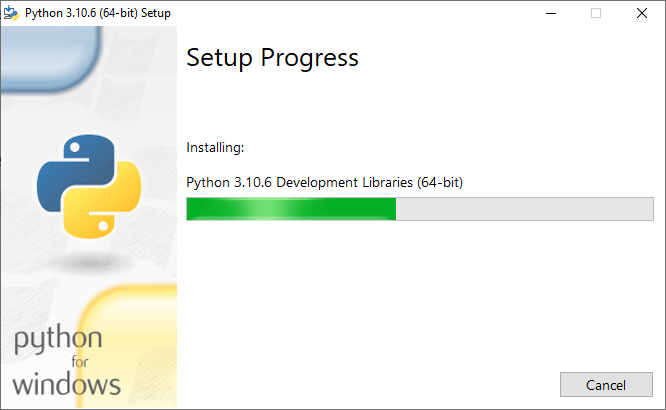

INSTALLING PYTHON
This is a guide to installing python
Windows (with images)
First to go python.org and download the installer.
After that double click on the installer to run it.
You should see this screen:

else click on the "Install now" option
after you click on it should change to this:

after installing close the window and your done!
Linux (Debian) (without images)
first open the terminal, then enter: sudo apt update
python should already be installed on your computer. to get the idle do: sudo apt install idle
if python is not already installed then enter: sudo apt install python3